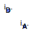

Table of Contents
- User's Guide
- Blocks
- Conditions
- Assemblies
- Regions
- Subregions
- Connectors
- Characteristics
- Units
- Quantities
- BaseClasses
Download
- Latest: FCSys-2.0.zip (**Please check back soon or contact kdavies4 at gmail.com.)

Licensed by the Georgia Tech Research Corporation under the Modelica License 2
Copyright 2007–2012, Georgia Tech Research Corporation.
This Modelica package is free software and the use is completely at your own risk; it can be redistributed and/or modified under the terms of the Modelica License 2. For license conditions (including the disclaimer of warranty) see FCSys.UsersGuide.ModelicaLicense2 or visit http://www.modelica.org/licenses/ModelicaLicense2.
Extends from Modelica.Icons.Package (Icon for standard packages).
| Name | Description |
|---|---|
| Examples | |
| Subregion with all phases | |
| Subregion with only the ionomer phase | |
| Subregion with all phases except ionomer | |
| Phases or mixtures of species | |
| Models for single-species storage, transport, and exchange of material, linear momentum, and energy | |
| PhaseBoundary | Phase boundary (adapter between Amagat and Dalton mixtures) |
| Reaction | Model to provide information about a chemical or electrochemical reaction |
| Model to establish a fixed volume for phases | |
| Base classes (not generally for direct use) | |
| ElectrochemicalReaction | ** |
 FCSys.Subregions.Subregion
FCSys.Subregions.Subregion

Notes:
inclReact parameter may be set to
false
to eliminate unnecessary equations.For more information, see the PartialSubregion model.
Extends from BaseClasses.PartialSubregion (Partial model for multi-dimensional and multi-species storage, transport, and exchange).
| Type | Name | Default | Description |
|---|---|---|---|
| Geometry | |||
| Length | L[Axis] | Length (L) [l] | |
| Phases | |||
| Gas | gas | Gas | |
| Graphite | graphite | Graphite | |
| Ionomer | ionomer | Ionomer | |
| Liquid | liquid | Liquid | |
| Assumptions | |||
| Boolean | inclReact | true | Include reactions (as appropriate) |
| Axes with linear momentum included | |||
| Boolean | inclLinX | true | X |
| Boolean | inclLinY | true | Y |
| Boolean | inclLinZ | true | Z |
| Axes with faces included | |||
| Boolean | inclFacesX | true | X |
| Boolean | inclFacesY | true | Y |
| Boolean | inclFacesZ | true | Z |
| Type | Name | Description |
|---|---|---|
| FaceBus | xNegative | Negative face along the x axis |
| FaceBus | xPositive | Positive face along the x axis |
| FaceBus | yNegative | Negative face along the y axis |
| FaceBus | yPositive | Positive face along the y axis |
| FaceBus | zNegative | Negative face along the z axis |
| FaceBus | zPositive | Positive face along the z axis |
model Subregion "Subregion with all phases" parameter Boolean inclReact=true "Include reactions (as appropriate)"; // Note: This is listed above the extends clause so that it's listed // first in the parameter dialog. extends BaseClasses.PartialSubregion; Phases.Gas gas(inclH2O=true,final inclReact=inclReact) "Gas"; Phases.Graphite graphite('e-'(initMethPartNum=if inclHOR or inclORR then InitMethScalar.None else InitMethScalar.Pressure)) "Graphite"; Phases.Ionomer ionomer('C19HF37O5S-'( setVelX=not graphite.'inclC+', setVelY=not graphite.'inclC+', setVelZ=not graphite.'inclC+', initMethX=if graphite.'inclC+' then InitMethVelocity.None else InitMethVelocity.Velocity, initMethY=if graphite.'inclC+' then InitMethVelocity.None else InitMethVelocity.Velocity, initMethZ=if graphite.'inclC+' then InitMethVelocity.None else InitMethVelocity.Velocity)) "Ionomer"; Phases.Liquid liquid "Liquid"; protected final parameter Boolean inclHOR=inclReact and (graphite.'incle-' and ionomer. 'inclH+' and gas.inclH2 and not (gas.inclO2 and gas.inclH2O)) "true, if HOR is included"; final parameter Boolean inclORR=inclReact and (graphite.'incle-' and ionomer. 'inclH+' and gas.inclO2 and gas.inclH2O and not gas.inclH2) "true, if ORR is included"; Reaction condEvap(formulas={"H2O","H2O"}) if inclReact and (gas.inclH2O and liquid.inclH2O) "H2O condensation and evaporation"; Reaction hOR(formulas={"e-","H+","H2"}) if inclHOR "Hydrogen oxidation reaction"; Reaction hydration(formulas={"H2O","H2O"}) if inclReact and (gas.inclH2O and ionomer.inclH2O) "PEM hydration and drying"; Reaction oRR(formulas={"e-","H+","O2","H2O"}) if inclORR "Oxygen reduction reaction"; // Note: The additional condition (not gas.inclH2O) prevents a singularity // if water is included as gas, liquid, and in ionomer. Connectors.ChemicalBusInternal CondEvap "Connector for H2O condensation and evaporation"; Connectors.ChemicalBusInternal HOR "Connector for hydrogen oxidation reaction"; Connectors.ChemicalBusInternal Hydration "Connector for ionomer hydration and drying"; Connectors.ChemicalBusInternal ORR "Connector for oxygen reduction reaction"; equation // Chemical reactions // ------------------ // Condensation/evaporation connect(CondEvap, gas.CondEvap); connect(CondEvap, liquid.CondEvap); connect(condEvap.chemO[1], CondEvap.gas); connect(condEvap.chemO[2], CondEvap.liquid); // HOR connect(HOR, gas.HOR); connect(HOR, graphite.HOR); connect(HOR, ionomer.HOR); connect(hOR.chemO[1], HOR.'e-'); connect(hOR.chemO[2], HOR.'H+'); connect(hOR.chemO[3], HOR.H2); // Hydration/drying connect(Hydration, gas.Hydration); connect(Hydration, ionomer.Hydration); connect(hydration.chemO[1], Hydration.gas); connect(hydration.chemO[2], Hydration.ionomer); // ORR connect(ORR, gas.ORR); connect(ORR, graphite.ORR); connect(ORR, ionomer.ORR); connect(oRR.chemO[1], ORR.'e-'); connect(oRR.chemO[2], ORR.'H+'); connect(oRR.chemO[3], ORR.O2); connect(oRR.chemO[4], ORR.H2O); // Gas connect(gas.inert, volume.inert); connect(gas.xNegative, xNegative.gas); connect(gas.xPositive, xPositive.gas); connect(gas.yNegative, yNegative.gas); connect(gas.yPositive, yPositive.gas); connect(gas.zNegative, zNegative.gas); connect(gas.zPositive, zPositive.gas); // Graphite connect(graphite.inert, volume.inert); connect(graphite.xNegative, xNegative.graphite); connect(graphite.xPositive, xPositive.graphite); connect(graphite.yNegative, yNegative.graphite); connect(graphite.yPositive, yPositive.graphite); connect(graphite.zNegative, zNegative.graphite); connect(graphite.zPositive, zPositive.graphite); // Ionomer connect(ionomer.inert, volume.inert); connect(ionomer.xNegative, xNegative.ionomer); connect(ionomer.xPositive, xPositive.ionomer); connect(ionomer.yNegative, yNegative.ionomer); connect(ionomer.yPositive, yPositive.ionomer); connect(ionomer.zNegative, zNegative.ionomer); connect(ionomer.zPositive, zPositive.ionomer); // Liquid connect(liquid.inert, volume.inert); connect(liquid.xNegative, xNegative.liquid); connect(liquid.xPositive, xPositive.liquid); connect(liquid.yNegative, yNegative.liquid); connect(liquid.yPositive, yPositive.liquid); connect(liquid.zNegative, zNegative.liquid); connect(liquid.zPositive, zPositive.liquid); end Subregion;
FCSys.Subregions.SubregionIonomerOnly

Notes:
For more information, see the PartialSubregion model.
Extends from BaseClasses.PartialSubregion (Partial model for multi-dimensional and multi-species storage, transport, and exchange).
| Type | Name | Default | Description |
|---|---|---|---|
| Geometry | |||
| Length | L[Axis] | Length (L) [l] | |
| Phases | |||
| Ionomer | ionomer | Ionomer | |
| Assumptions | |||
| Axes with linear momentum included | |||
| Boolean | inclLinX | true | X |
| Boolean | inclLinY | true | Y |
| Boolean | inclLinZ | true | Z |
| Axes with faces included | |||
| Boolean | inclFacesX | true | X |
| Boolean | inclFacesY | true | Y |
| Boolean | inclFacesZ | true | Z |
| Type | Name | Description |
|---|---|---|
| FaceBus | xNegative | Negative face along the x axis |
| FaceBus | xPositive | Positive face along the x axis |
| FaceBus | yNegative | Negative face along the y axis |
| FaceBus | yPositive | Positive face along the y axis |
| FaceBus | zNegative | Negative face along the z axis |
| FaceBus | zPositive | Positive face along the z axis |
model SubregionIonomerOnly "Subregion with only the ionomer phase" extends BaseClasses.PartialSubregion; Phases.Ionomer ionomer(inclH2O=true, final inclLin={inclLinX,inclLinY, inclLinZ}) "Ionomer"; equation // Ionomer connect(ionomer.chemical, chemical.ionomer); connect(ionomer.inert, volume.inert); connect(ionomer.xNegative, xNegative.ionomer); connect(ionomer.xPositive, xPositive.ionomer); connect(ionomer.yNegative, yNegative.ionomer); connect(ionomer.yPositive, yPositive.ionomer); connect(ionomer.zNegative, zNegative.ionomer); connect(ionomer.zPositive, zPositive.ionomer); end SubregionIonomerOnly;
FCSys.Subregions.SubregionNoIonomer

Notes:
inclReact parameter may be set to
false
to eliminate unnecessary equations.For more information, see the PartialSubregion model.
Extends from BaseClasses.PartialSubregion (Partial model for multi-dimensional and multi-species storage, transport, and exchange).
| Type | Name | Default | Description |
|---|---|---|---|
| Geometry | |||
| Length | L[Axis] | Length (L) [l] | |
| Phases | |||
| Gas | gas | Gas | |
| Graphite | graphite | Graphite | |
| Liquid | liquid | Liquid | |
| Assumptions | |||
| Boolean | inclReact | false | Include reactions (as appropriate) |
| Axes with linear momentum included | |||
| Boolean | inclLinX | true | X |
| Boolean | inclLinY | true | Y |
| Boolean | inclLinZ | true | Z |
| Axes with faces included | |||
| Boolean | inclFacesX | true | X |
| Boolean | inclFacesY | true | Y |
| Boolean | inclFacesZ | true | Z |
| Type | Name | Description |
|---|---|---|
| FaceBus | xNegative | Negative face along the x axis |
| FaceBus | xPositive | Positive face along the x axis |
| FaceBus | yNegative | Negative face along the y axis |
| FaceBus | yPositive | Positive face along the y axis |
| FaceBus | zNegative | Negative face along the z axis |
| FaceBus | zPositive | Positive face along the z axis |
model SubregionNoIonomer "Subregion with all phases except ionomer" parameter Boolean inclReact=false "Include reactions (as appropriate)"; // Note: This is listed above the extends clause so that it's listed // first in the parameter dialog. extends BaseClasses.PartialSubregion; Phases.Gas gas(inclH2O=true, inclReact=inclReact) "Gas"; Phases.Graphite graphite "Graphite"; Phases.Liquid liquid "Liquid"; protected Reaction condEvap(formulas={"H2O","H2O"}) if inclReact and (gas.inclH2O and liquid.inclH2O) "H2O condensation and evaporation"; Connectors.ChemicalBusInternal CondEvap "Connector for H2O condensation and evaporation"; equation // Chemical interactions (not shown graphically) // Gas connect(gas.chemical, chemical.gas); connect(gas.inert, volume.inert); connect(gas.xNegative, xNegative.gas); connect(gas.xPositive, xPositive.gas); connect(gas.yNegative, yNegative.gas); connect(gas.yPositive, yPositive.gas); connect(gas.zNegative, zNegative.gas); connect(gas.zPositive, zPositive.gas); // Graphite connect(graphite.chemical, chemical.graphite); connect(graphite.inert, volume.inert); connect(graphite.xNegative, xNegative.graphite); connect(graphite.xPositive, xPositive.graphite); connect(graphite.yNegative, yNegative.graphite); connect(graphite.yPositive, yPositive.graphite); connect(graphite.zNegative, zNegative.graphite); connect(graphite.zPositive, zPositive.graphite); // Liquid connect(liquid.chemical, chemical.liquid); connect(liquid.inert, volume.inert); connect(liquid.xNegative, xNegative.liquid); connect(liquid.xPositive, xPositive.liquid); connect(liquid.yNegative, yNegative.liquid); connect(liquid.yPositive, yPositive.liquid); connect(liquid.zNegative, zNegative.liquid); connect(liquid.zPositive, zPositive.liquid); connect(condEvap.chemO[1], CondEvap.gas); connect(condEvap.chemO[2], CondEvap.liquid); connect(CondEvap, liquid.CondEvap); end SubregionNoIonomer;

This model is essentially an adapter between the InertDalton and InertAmagat connectors. Inside a phase, Dalton's law is applied. Outside, Amagat's law is applied.
See also the documentation in the Connectors package.
| Type | Name | Description |
|---|---|---|
| InertAmagat | inertA | Connector for volume, linear momentum, and heat—with Amagat's law |
| InertDalton | inertD | Connector for volume, linear momentum, and heat—with Dalton's law |
model PhaseBoundary "Phase boundary (adapter between Amagat and Dalton mixtures)" // extends FCSys.BaseClasses.Icons.Names.Top7; Connectors.InertAmagat inertA(final n_lin=n_lin) "Connector for volume, linear momentum, and heat—with Amagat's law"; Connectors.InertDalton inertD(final n_lin=n_lin) "Connector for volume, linear momentum, and heat—with Dalton's law"; protected outer parameter Integer n_lin "Number of components of linear momentum"; equation // Equal intensive properties inertA.phi = inertD.phi; inertA.T = inertD.T; // Static balances 0 = inertA.p + inertD.p "Pressure"; 0 = inertA.V + inertD.V "Volume"; // Conservation (no storage or generation) zeros(n_lin) = inertA.mPhidot + inertD.mPhidot "Linear momentum"; 0 = inertA.Qdot + inertD.Qdot "Energy"; end PhaseBoundary;
This model has no physical connectors. It simply provides information about a reaction to instances of the Species model, which contains equations that govern the reaction.
The stoichiometry is determined automatically from the chemical formulas
of the connected species. No intermediate species are considered. Each reaction must be
completely and uniquely defined by the species entered in the formulas array.
Otherwise an error message is given.
The exchange current (Io) may be time-varying (e.g., dependent on operating conditions).
Extends from FCSys.BaseClasses.Icons.Names.Top2.
| Type | Name | Default | Description |
|---|---|---|---|
| String | formulas[:] | {""} | Chemical formulas of the species |
| Boolean | enable | true | true, if the reaction should be enabled |
| CurrentAbsolute | Io | 0.01*U.A | Exchange current (Io) [N/T] |
| Type | Name | Description |
|---|---|---|
| ChemicalOutput | chemO[n_spec] | **Connector for chemical species |
model Reaction "Model to provide information about a chemical or electrochemical reaction" import FCSys.BaseClasses.Utilities.Chemistry.stoich; extends FCSys.BaseClasses.Icons.Names.Top2; parameter String formulas[:]={""} "Chemical formulas of the species"; parameter Boolean enable=true "true, if the reaction should be enabled"; Q.CurrentAbsolute Io=0.01*U.A "Exchange current (Io)"; Connectors.ChemicalOutput chemO[n_spec]( final formula=formulas, final n=n_spec*stoich(formulas), each final Io=if enable then Io else 0) "**Connector for chemical species"; protected final parameter Integer n_spec=size(formulas, 1) "Number of species"; end Reaction;
 FCSys.Subregions.Volume
FCSys.Subregions.Volume

This model uses an InertAmagat connector that imposes additivity of volume. In order to convert to additivity of pressure, use the PhaseBoundary model.
See also the documentation in the Connectors package.
| Type | Name | Description |
|---|---|---|
| InertAmagat | inert | Connector for linear momentum and heat, with additivity of volume |
model Volume "Model to establish a fixed volume for phases" // extends FCSys.BaseClasses.Icons.Names.Top7; Connectors.InertAmagat inert(final n_lin=n_lin) "Connector for linear momentum and heat, with additivity of volume"; outer parameter Q.Volume V "Volume"; // Note: These must be public in Dymola 7.4, so HideResult is set true // instead. protected outer parameter Integer n_lin "Number of components of linear momentum"; equation // Specified volume V = inert.V; // Conservation (no storage or generation) zeros(n_lin) = inert.mPhidot "Linear momentum"; 0 = inert.Qdot "Energy"; end Volume;
| Type | Name | Default | Description |
|---|---|---|---|
| String | formulas[:] | {""} | Chemical formulas of the species |
| Boolean | enable | true | true, if the reaction should be enabled |
| CurrentAbsolute | Io | 0.01*U.A | Exchange current (Io) [N/T] |
| AmountVolumic | rho_0 | 298.15*U.K/U.atm | [N/l3] |
| Type | Name | Description |
|---|---|---|
| ChemicalOutput | chemO[n_spec] | **Connector for chemical species |
| Chemical | chemical | |
| Face | face |
model ElectrochemicalReaction "**" extends Reaction; Connectors.Chemical chemical; Connectors.Face face; parameter Q.AmountVolumic rho_0=298.15*U.K/U.atm; equation face.Ndot = chemical.I; face.rho = rho_0*exp((chemical.g + face.mPhidot[1]/face.rho)/face.T); face.phi = zeros(face.n_lin); face.Qdot = 0; chemical.Qdot = 0; chemical.mPhidot = zeros(chemical.n_lin); end ElectrochemicalReaction;